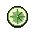
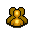

")
Controls - The Basics
Introduction
RuneScape has a very effective and efficient control system. Once you learn the various aspects of the system, using it becomes second nature.
Movement
Traversing RuneScape can be achieved by using your mouse. For single-button mice, move the mouse to where you want to go and click the button. For mice with two or more buttons, move where you want to go and click the left mouse button.
![[image]](../../img/main/kbase/controls/how_to_move.gif) If this is done correctly, your character will start moving and a small yellow 'X' will flash briefly on the spot where your character will stop.
If this is done correctly, your character will start moving and a small yellow 'X' will flash briefly on the spot where your character will stop.
You can run to a spot by holding the 'CTRL' key on your keyboard before clicking where you wish to move.
If you wish to move around quickly, you can set your character to run for as long as they have energy. This feature can be turned on through the option tab, or by clicking the run energy globe next to the minimap. Read the Options section for more information.
Every single task in RuneScape can be accomplished using the mouse. To perform the default action associated with an item, move the mouse pointer over it and click the 'action' button. This is the left button on a two-or-more button mouse, or the button on an one-button mouse and then select the first option from the menu.
Often, by hovering your mouse over something in-game, your cursor will change. For example, your cursor will change into a hand if you can use something, or it will change into an arrow going into a bag if you can pick something up. These are the actions that will be performed if you left-click (on a two-or-more button mouse) or click and select the top-most option (on a one-button mouse).

When you request for an action to be performed, a red cross will briefly appear to indicate that the request was received. You may have to wait a few moments for your character to perform the action. In the image to the right, the player has asked his character to take the coins lying on the floor.
Items and objects in RuneScape have multiple actions associated with them. To view and select an alternative to the default action of an item or object, a player using a multiple button mouse should click the right mouse button, while the mouse pointer is over the item or object. A menu of other actions that can be performed on that item or with the item will be displayed. Single button mouse users are always shown this menu of options.
The Game Window

Name |
Purpose |
| Minimap, compass and world map | A minimap with a compass to help you navigate around RuneScape. The world map globe will open a map of the surface of RuneScape in the game window. By clicking the compass you will reset the camera so it is facing north. |
| Status globes | A read-out of your drainable statistics (life points, prayer points, run energy and summoning points - Summoning will only be visible if you are on a members' world and have completed Wolf Whistle). |
| Log out | The 'X' icon at the top-right of your game window can be used to log yourself out of the game. |
| Advisor button | The '?' icon at the top-right of your game window can be used to access your advisor system. |
Game window |
The main window that displays your view into RuneScape. |
| Chat window | The lower section of the game window where you can view and respond to other players' messages. There are a number of buttons you can use to customise how you view chat and game information. |
| Control panel | Section to the bottom right of the game window. This allows the player to change and access other aspects of the game. |
Location Indicators
As you approach certain areas in RuneScape, an icon will be displayed in the lower right hand corner of the game window to indicate the type of area it is. The icon will stay there until you leave the area.
Below is a table of all the indicators in RuneScape and their meaning.
| Location indicated | Image | Purpose |
| Duel Arena | Tells the player when they have entered the duelling area. | |
| Multicombat zone | ![[image]](../../img/main/kbase/controls/multicombat_symbol.gif) |
Tells the player when they are in an area where they can combat more than one opponent. |
| Rat pits | This icon is displayed while the player is in the Rat Pits. | |
| Wilderness | ![[image]](../../img/main/kbase/controls/wilderness.gif) |
This icon is displayed when a player is in the Wilderness. |
Minimap and Status Globes

You can navigate through RuneScape by clicking in the minimap window. This is good for moving further than is possible in the game window view.
To the right of the minimap are a number of status globes giving you easy access to some important information on your life points, prayer points, run energy and summoning points (if you have completed Wolf Whistle). The numbers they display will change colour as they reduce (from being wounded, using Summoning points, etc.), and the life points icon will start flashing when it reaches a dangerously low level.
The life points globe will change colour to indicate when you are poisoned or diseased (changing to green or yellow, respectively). If you have a potion that can cure you, you can then simply click on the globe to drink a dose of that potion. It will automatically take the dose from the least full vial you have.
You can also click on the run energy globe to turn running on, or the Prayer globe to turn your quick Prayers on or off. Further, you can right-click on the run energy globe and select 'Rest' to increase the rate at which your run energy and life points replenish. This is significantly increased if you do so near one of the musicians dotted around RuneScape.
Finally, the Summoning globe's left-click option can be customised to your needs. Right-click on the globe and choose 'Select left-click option', then choose from one of the following: follower details, special attack, attack, call follower, dismiss follower, take BoB (beast of burden), renew familiar. Confirm your choice, then whenever you left-click on this globe from then on, it will have that effect. As your needs change, simply choose a different left-click option. You can also access the Summoning interface from this globe's right-click menu.
When you rotate the camera, the compass and minimap rotate to reflect which direction you are looking. This may be different from the direction your character is facing or moving.
For example, you can make the camera face north to see what is in that direction while your character is moving to the east.
The minimap displays your immediate surrounding environment which includes buildings, streets, non-player characters, information icons etc.
Information icons are explained in the World Map View section of the Manual.
Below is a table of the colour dots in the minimap and their meaning.
Icon Name |
Meaning |
Red Flag |
Destination of last move command. |
Red Dot |
Items that you can pick up. |
White Dot |
Other human players. |
Green Dot |
Players in your Friends List. |
Yellow Dot |
Monsters and non-player characters. |
Blue Dot |
Other players wearing the same team cape as you. |
Purple Dot |
Other players in your clan chat channel. |
Scenery such as trees, fences and rocks each have specific graphics to make navigating clearer.
Icons are shown on the map to mark certain useful features, including quest start points, banks and the entrances of dungeons.
For more information about the in-game world map, click here.
Control Panel
The control panel is where players interact with their inventory and other aspects of the game. Each icon in the control panel relates to an area of the game you can configure or interact with.
Icon Name |
Hotkey |
Explanation |
Combat |
F5 | Allows you to control your combat strategy. |
Statistics |
None | Displays the skills and your current level for each one. |
Quest Journal |
None | Displays a list of quests you haven't started, have started but not completed and have completed. |
|  Achievement Diary |
None | Displays a list of Achievement Diaries and your level of completion in each difficulty rating. |
Inventory |
F1 | Gives you access to your inventory of items. |
Equipped |
F2 | Gives you access to your equipped inventory. |
Prayers |
F3 | Gives you access to your Prayers. |
Magic Spells |
F4 | Shows the spells you can cast and basic information for them. |
Objectives |
None | Allows you to set objectives for your character. |
Friends List |
None | Allows you to manage your friends list and communicate privately with them. |
Ignore List |
None | Allows you to manage your ignore list. |
|  Clan Chat |
None | Allows you to manage your clan chat channel for group discussions. |
Game Options |
None | Gives you access to various game settings. |
Emotes |
None | Allows you to express emotions or ideas through your character behaving in a certain way (e.g. waving, dancing, etc.). |
Music Player |
None | Gives you access to the music player and songs available to play. |
Notes |
None | A space for you to enter notes and reminders for easy access. |

More articles in
Controls
|
|
|
Further Help
If this article does not help you, you may find the following sections of the RuneScape site helpful:
|
|